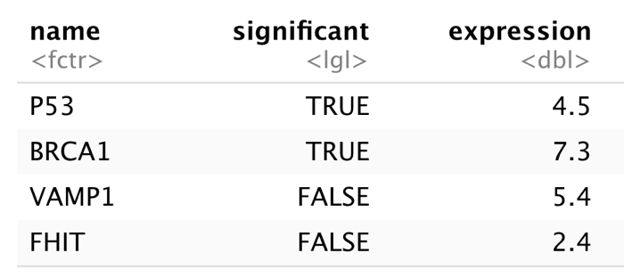

Chapter 5 Complex Datatypes and File Reading
5.1 Matrices are vectors with dimensions
We will not detail on them in this course, only this one small paragraph. This does not mean they are not important, but they are just not the focus here. Some functions require or return a matrix so you should be aware of them.
m <- matrix(1:10, nrow = 2, ncol = 5)
m## [,1] [,2] [,3] [,4] [,5]
## [1,] 1 3 5 7 9
## [2,] 2 4 6 8 10v <- 1:10
dim(v) <- c(2, 5)
v## [,1] [,2] [,3] [,4] [,5]
## [1,] 1 3 5 7 9
## [2,] 2 4 6 8 105.2 Factors: Nominal & Ordinal scales
Although factors are not actually a complex datatype but very much one of the five base types in R, I saved them because they have some more complex and sometimes puzzling behaviour.
Factors represent different discrete levels of a variable - the nominal and ordinal scales known from statistics.
For instance:
- eye color (brown, blue, green)
- weight class (underweight, normal, obese)
- autism spectrum (none, minimal, heavy)
Factor creation
Factors are used to represent data in nominal and ordinal scales. Nominal has no order (e.g. eye color). Ordinal has order (e.g. autism spectrum), but can not be calculated with, other than ordering from high to low. No distance is defined between separate levels. The following functions are used to create factors:
factor(): constructor function, from factor, character, numeric or logicalas.factor(): coercion function, from factor, character, numeric or logicalcut(): conversion function from numeric vector
So what is the difference between factor() and as.factor()? Function as.factor() is a wrapper for factor(). The difference lies in behaviour when the input is a factor itself: factor will omit unused levels. Besides this, as.factor() does not specify the arguments for labels and levels.
x <- factor(c("a", "b"), levels = c("a", "b", "c"))
x
factor(x)
as.factor(x)## [1] a b
## Levels: a b c
## [1] a b
## Levels: a b
## [1] a b
## Levels: a b cSuppose you have surveyed the eye color of your class room and found these values
eye_colors <- c("green", "blue", "brown", "brown", "blue",
"brown", "brown", "brown", "blue", "brown", "green",
"brown", "brown", "blue", "blue", "brown")Next you would like to plot or tabulate these findings. Simply plotting gives an error:
plot(eye_colors)## Warning in xy.coords(x, y, xlabel, ylabel, log): NAs introduced by coercion## Warning in min(x): no non-missing arguments to min; returning Inf## Warning in max(x): no non-missing arguments to max; returning -Inf## Error in plot.window(...): need finite 'ylim' values
However, plotting a character vector converted to a factor is easy
eye_colors <- as.factor(eye_colors)
plot(eye_colors)Factors are also really easy to tabulate and filter
table(eye_colors)## eye_colors
## blue brown green
## 5 9 2sum(eye_colors == "blue")## [1] 5Levels, Labels and Ordering
When working with ordinal scales, defining the order of the factors (levels) is crucial. By default, R uses the natural ordering which means it will stick to either numerical (numeric, integer and logical) or alphabetical ordering (character). When you want a different ordering you need to specify this. You can even define missing levels, as shown in the following example.
classSizes <- factor(c("big", "small", "huge", "huge",
"small","big","small","big"),
levels = c("small", "normal", "big", "huge"),
ordered = TRUE) #make it an ordinal scale!
plot(classSizes)When you have factor, you can do a -limited- set of calulations with it. However, comparators only work with ordinal scale. As with all equality tests, sum() works as well:
classSizes < "big" ## only with in Ordinal scale## [1] FALSE TRUE FALSE FALSE TRUE FALSE TRUE FALSEsum(classSizes == "huge") ## [1] 2Convert existing factors
When you already have an unordered factor, you can make it ordered by using the function ordered() together with a fvector specifying the levels.
classSizes <- factor(c("big", "small", "huge", "huge",
"small", "big", "small", "big"))
classSizes <- ordered(classSizes,
levels = c("small", "big", "huge"))
classSizes## [1] big small huge huge small big small big
## Levels: small < big < hugeWhen calculations get corrupted
Especially when a factor consists of numeric levels, calculations can get your mind screwed big time:
x <- factor(c(3, 4, 5, 4))
x + 1## Warning in Ops.factor(x, 1): '+' not meaningful for factors## [1] NA NA NA NAas.integer(x) + 1## [1] 2 3 4 3as.integer(levels(x)) + 1## [1] 4 5 6The only way to get the numbers back with numeric factors is by using this trick
x## [1] 3 4 5 4
## Levels: 3 4 5as.integer(levels(x))[x]## [1] 3 4 5 4But this makes for really unintelligible code so try to prevent this at all costs!
The power of factors
Factors are used all the time e.g. for defining treated/untreated. That’s why R knows how to deal with them so well:
with(ChickWeight, plot(weight ~ Diet))You will see many many exaples in the subsequent chapters of this and the next course.
5.3 Lists
A list is an ordered collection of vectors. These vectors can have differing types and differing lengths.
List creation
Create a list with or without element names:
list(element1, element2, ...)
list(name1 = element1, name2 = element2, ...)
Without names:
x <- c(2, 3, 1); y <- c("foo", "bar")
l <- list(x, y); l## [[1]]
## [1] 2 3 1
##
## [[2]]
## [1] "foo" "bar"l[[2]]## [1] "foo" "bar"With names:
x <- c(2, 3, 1)
y <- c("foo", "bar")
l <- list("numbers" = x, "words" = y)
l## $numbers
## [1] 2 3 1
##
## $words
## [1] "foo" "bar"This is the preferred way to create and use them because it gives you more and easier ways to access its elements and it makes for much more reradable code. That’s why you will only see lists with named elements from here on.
Making selections on lists
Accessing named elements can be done in three ways:
- By index, within double or single brackets:
[[<index>]]or[<index>] - By name of the element, within double or single brackets:
[[<name>]]or[<name>] - By name of the element, using the dollar sign on the list name:
$<name>
Here are all three:
l[[2]] # index## [1] "foo" "bar"l[["words"]] # name of element with double brackets## [1] "foo" "bar"l$words # name of element with dollar sign## [1] "foo" "bar"Single brackets selection on a list returns a list; double brackets and
$return a vector.
l[2]## $words
## [1] "foo" "bar"l[[2]]## [1] "foo" "bar"l$words## [1] "foo" "bar"In R, selections are often chained. In the following example the second vector element of the second list element is selected.
l
l[[2]][2] ## $numbers
## [1] 2 3 1
##
## $words
## [1] "foo" "bar"
##
## [1] "bar"When you need multiple elements of a list, use single brackets. Remember: single brackets return a list; that’s why you need single brackets here.
l[c(1,2,1)]## $numbers
## [1] 2 3 1
##
## $words
## [1] "foo" "bar"
##
## $numbers
## [1] 2 3 1Accessing named elements has its limitations. You can not use a variable in combination with the dollar sign selector.
select <- "words"
l[[select]] ## OK## [1] "foo" "bar"l$select ##fails - no element with name "select"## NULLChaining of selectors can become awkward, as this example demonstrates.
l[2]["words"][1]$words ## mind****## [1] "foo" "bar"5.4 Dataframes
A dataframe is an ordered collection of vectors. These vectors can have differing types but must have equal lengths.
A dataframe is very similar to the square grid-like structures you have probably worked with in Excel. Variables are in columns in which all elements are of the same type. Examples (observations) are in rows - they can have differing types.
Dataframes can be constructed using the data.frame() function in the same way as the list function:
data.frame(column1 = vector1, column2 = vector2, ...)
Here is a first example.
geneNames <- c("P53","BRCA1","VAMP1", "FHIT")
sig <- c(TRUE, TRUE, FALSE, FALSE)
meanExp <- c(4.5, 7.3, 5.4, 2.4)
genes <- data.frame(
"name" = geneNames,
"significant" = sig,
"expression" = meanExp)
genes## name significant expression
## 1 P53 TRUE 4.5
## 2 BRCA1 TRUE 7.3
## 3 VAMP1 FALSE 5.4
## 4 FHIT FALSE 2.4Here you can see the structure of a dataframe: each column has a single datatype but rows can have differing types for neighboring fields.

5.4.1 Selections on dataframes
Making selections on dataframes is not very surprising when you already know how to do it with vectors and lists. There is only one extension. The fact that it is a square grid-like structure makes it possible to add an extra way of making selections: combining rows and column selections as subgrids. This section extensively reviews all means of making selections.
This is a summary:
- Select a single column using
$will return a vector - Selecting with double brackets
[[<name>]]or[[<index>]]will return a vector - Selecting with single brackets
[<name>]or[<index>]will return a dataframe - Selecting with row-and-column coordinates
[row_selection, col_selection]returns either a vector or a dataframe, depending on the selection made. Here,row_selectionandcol_selectioncan be- a numerical vector of length 1 or more
- a logical vector of length 1 or more
- empty (to select all rows/columns)
Here follow a few examples.
> genes[2,1] #row 2, column 1## [1] BRCA1
## Levels: BRCA1 FHIT P53 VAMP1> genes[2, 1:2] #row 2, columns 1 and 2## name significant
## 2 BRCA1 TRUE> genes[2, c(1, 3)] #row 2, column 1 and 3## name expression
## 2 BRCA1 7.3> genes$name #column "name"## [1] P53 BRCA1 VAMP1 FHIT
## Levels: BRCA1 FHIT P53 VAMP1> genes[, c("name", "expression")] #columns "name" and "expression", all rows## name expression
## 1 P53 4.5
## 2 BRCA1 7.3
## 3 VAMP1 5.4
## 4 FHIT 2.4> genes[, 1:2] #columns 1 and 2, all rows## name significant
## 1 P53 TRUE
## 2 BRCA1 TRUE
## 3 VAMP1 FALSE
## 4 FHIT FALSE> genes[1:2, ] #row 1 and 2, all columns## name significant expression
## 1 P53 TRUE 4.5
## 2 BRCA1 TRUE 7.3As with vectors and lists, R will cycle selectors, and you can select an element as often as you want.
genes[c(T, F), 1] #every uneven row, column 1## [1] P53 VAMP1
## Levels: BRCA1 FHIT P53 VAMP1genes[c(1, 1, 1, 2), ] #three times row 1 and row 2## name significant expression
## 1 P53 TRUE 4.5
## 1.1 P53 TRUE 4.5
## 1.2 P53 TRUE 4.5
## 2 BRCA1 TRUE 7.3A dataframe is much like a list, but not entirely equal:
genes[["name"]] ## select column w. double brackets## [1] P53 BRCA1 VAMP1 FHIT
## Levels: BRCA1 FHIT P53 VAMP1class(genes) ## it is NOT a list though## [1] "data.frame"str(genes)## 'data.frame': 4 obs. of 3 variables:
## $ name : Factor w/ 4 levels "BRCA1","FHIT",..: 3 1 4 2
## $ significant: logi TRUE TRUE FALSE FALSE
## $ expression : num 4.5 7.3 5.4 2.4Selections with subset()
Function subset() can serve as alternative to “bracket-based” selections ([ , ]).
You can use subset() to make both column and row selections. Here, using subset =, the rows are selected for which Solar.R is available using the is.na() function.
head(subset(airquality, subset = !is.na(Solar.R)))## Ozone Solar.R Wind Temp Month Day
## 1 41 190 7.4 67 May 1
## 2 36 118 8.0 72 May 2
## 3 12 149 12.6 74 May 3
## 4 18 313 11.5 62 May 4
## 7 23 299 8.6 65 May 7
## 8 19 99 13.8 59 May 8Note that you don’t even need to use quotes for column names.
Select columns only with the select = argument.
head(subset(airquality, select = c(Ozone, Solar.R)))## Ozone Solar.R
## 1 41 190
## 2 36 118
## 3 12 149
## 4 18 313
## 5 NA NA
## 6 28 NAOf course, you can combine row and colum selection:
head(subset(airquality,
subset = !is.na(Solar.R),
select = c(Ozone, Solar.R)))## Ozone Solar.R
## 1 41 190
## 2 36 118
## 3 12 149
## 4 18 313
## 7 23 299
## 8 19 99# shorthand notation
#subset(airquality, Day == 1, select = -Temp)subset() can be used more sophisticated; however we are going to see subset() on steroids in the next course: the functions in package dplyr.
5.4.2 Read from file using read.table()
Usually your data comes from file, loaded into memory as a dataframe. The most common data transfer & storage format is text. The text will have column separators that can be any of a whole number of characters, but tab- or comma-delimited are most common.
Here is an example dataset in a file (“whale_selenium.txt”) where the separator is a space character:
whale liver.Se tooth.Se
1 6.23 140.16
2 6.79 133.32
3 7.92 135.34
...
19 41.23 206.30
20 45.47 141.31 To load this data into an R session you can use the function read.table(). Let’s try
> whale_selenium <- read.table("data/whale_selenium.txt")
> head(whale_selenium) # first rows## V1 V2 V3
## 1 whale liver.Se tooth.Se
## 2 1 6.23 140.16
## 3 2 6.79 133.32
## 4 3 7.92 135.34
## 5 4 8.02 127.82
## 6 5 9.34 108.67> str(whale_selenium) # structure## 'data.frame': 21 obs. of 3 variables:
## $ V1: Factor w/ 21 levels "1","10","11",..: 21 1 12 14 15 16 17 18 19 20 ...
## $ V2: Factor w/ 21 levels "10.00","10.57",..: 21 16 17 18 19 20 1 2 3 4 ...
## $ V3: Factor w/ 21 levels "108.67","112.63",..: 21 8 5 6 3 1 12 4 11 14 ...That is not entirely correct: all columns are imported as a factor while obviously they should be numeric. The cause of this is that, when loading the data,
- there is no special consideration for the header line
- the separator is assumed to be a space
- the decimal is assumed to be a dot “.”
(and some more assumptions)
Therefore, to read a file correctly, you have to specify its format in every detail. in this case,
- the first line is a header with column names
- the first column contains the row names
Here is a new attempt with some format specifications:
whale_selenium <- read.table(
file = "data/whale_selenium.txt",
header = TRUE,
row.names = 1)Before proceeding with your data, you should always perform some checks. Several helper methods exist for this purpose:
head()shows you the firstnlinesstr()gives you a structure description: what types have the columns and what dimension does the data frame have?summary()gives you a 6-number sumary of the data
> head(whale_selenium, n=4) ## liver.Se tooth.Se
## 1 6.23 140.16
## 2 6.79 133.32
## 3 7.92 135.34
## 4 8.02 127.82> str(whale_selenium) ## 'data.frame': 20 obs. of 2 variables:
## $ liver.Se: num 6.23 6.79 7.92 8.02 9.34 ...
## $ tooth.Se: num 140 133 135 128 109 ...> summary(whale_selenium) ## liver.Se tooth.Se
## Min. : 6.230 Min. :108.7
## 1st Qu.: 9.835 1st Qu.:134.8
## Median :14.905 Median :143.4
## Mean :20.685 Mean :156.6
## 3rd Qu.:33.633 3rd Qu.:175.1
## Max. :45.470 Max. :245.1There are various other helper methods the you can use to inspect the contents and nature of your dataframe columns and rows:
dim()gives the rows and columnsncol()gives the number of columnsnrow()gives the number of rowsnames()gives the column names (synonym tocolnames())rownames()gives the row names
But visualizing your data speaks more than a thousand words of course.
plot(whale_selenium$liver.Se, whale_selenium$tooth.Se,
xlab = "liver Selenium", ylab = "tooth Selenium")
abline(lm(whale_selenium$tooth.Se ~ whale_selenium$liver.Se))This is absolutely not the whole filereading story! The topic will be addressed again in a later chapter.
5.4.3 Dataframe manipulations
Changing column names
Sometimes the existing column names are not convenient to work with (unclear, too long etc.). In that case it may be a good idea to change the column names. To do this you can use either names() or colnames().
names(whale_selenium) <- c("liver", "tooth")
head(whale_selenium, n=2)## liver tooth
## 1 6.23 140.16
## 2 6.79 133.32##or
colnames(whale_selenium) <- c("pancreas", "colon")
head(whale_selenium, n=2)## pancreas colon
## 1 6.23 140.16
## 2 6.79 133.32Adding columns
You can add a single column by simply specifying its name and the value(s) to be attached.
## add simulated stomach data
whale_selenium$stomach <- rnorm(nrow(whale_selenium), 42, 6)
head(whale_selenium, n=2)## liver tooth stomach
## 1 6.23 140.16 52.53270
## 2 6.79 133.32 50.69782Alternatively, use cbind. It is a bit more versatile because you can add multiple columns at once.
cbind(whale_selenium, "brain" = c(1, 0)) #cycled values!## liver tooth stomach brain
## 1 6.23 140.16 52.53270 1
## 2 6.79 133.32 50.69782 0
## 3 7.92 135.34 39.30723 1
## 4 8.02 127.82 42.84040 0
## 5 9.34 108.67 39.75810 1
## 6 10.00 146.22 34.76140 0
## 7 10.57 131.18 26.03192 1
## 8 11.04 145.51 41.84943 0
## 9 12.36 163.24 41.79376 1
## 10 14.53 136.55 51.85415 0
## 11 15.28 112.63 30.02723 1
## 12 18.68 245.07 38.02698 0
## 13 22.08 140.48 47.28023 1
## 14 27.55 177.93 44.05432 0
## 15 32.83 160.73 42.73052 1
## 16 36.04 227.60 38.27543 0
## 17 37.74 177.69 43.20567 1
## 18 40.00 174.23 40.58457 0
## 19 41.23 206.30 42.68197 1
## 20 45.47 141.31 38.53242 0Adding rows: rbind()
Adding rows to a dataframe is similar. There is however a constraint: the column names of both dataframes need to match for this operation to succeed.
my_data1 <- data.frame(colA = 1:3, colB = c("a", "b", "c"))
my_data2 <- data.frame(colA = 4:5, colB = c("d", "e"))
my_data_complete <- rbind(my_data1, my_data2)
my_data_complete## colA colB
## 1 1 a
## 2 2 b
## 3 3 c
## 4 4 d
## 5 5 e